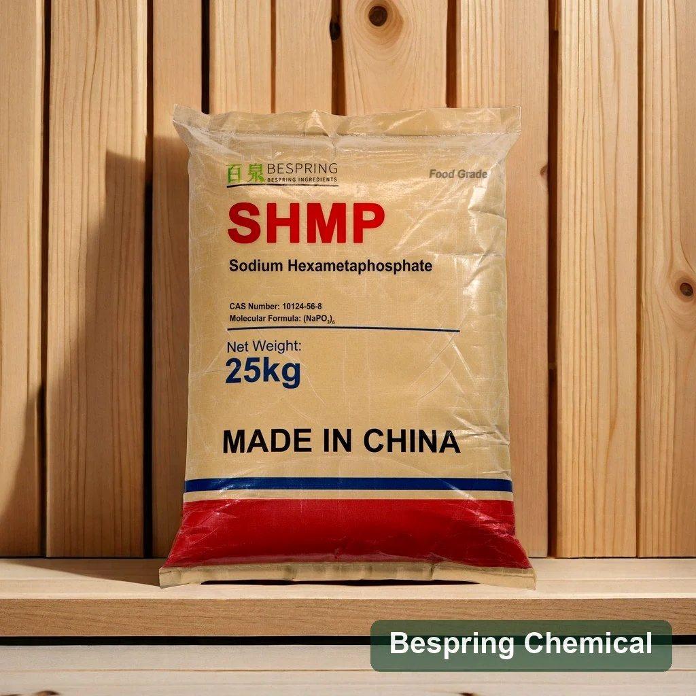
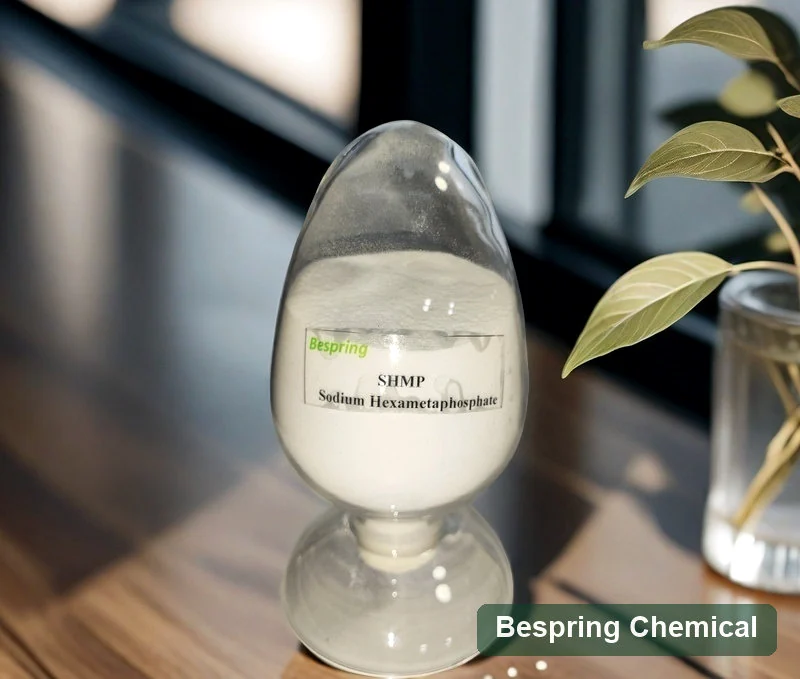
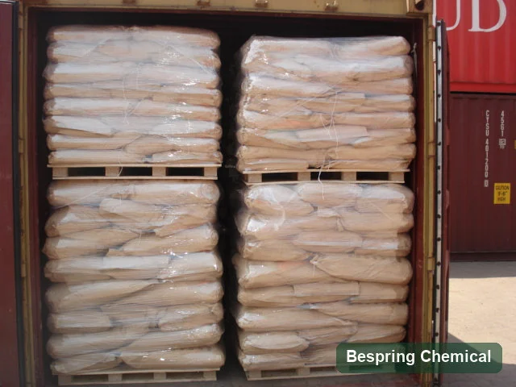

(NaPO₃)₆
Es una representación simplificada, no la composición completa de cada grado comercial.
Ingrediente alimentario · Evaluación técnica B2B
Fosfato para secuestrar iones y ajustar el comportamiento del sistema; confirme composición y grado comercial.
Indique aplicación, cantidad, destino y documentos requeridos para evaluar una oferta concreta.

Identidad del producto
El hexametafosfato de sodio comercial debe evaluarse por identidad, composición y función. Verifique siempre el grado alimentario propuesto.
Composición comercial
La fórmula abreviada no describe por completo la distribución de cadenas de un producto comercial. Aclare el método y el contenido de fosfatos.
Es una representación simplificada, no la composición completa de cada grado comercial.
Revise la distribución de cadenas y el comportamiento de solución.
Compruebe composición y función del material ofrecido.
Función tecnológica
Puede secuestrar iones y afectar pH, estabilidad o textura. Mida la respuesta en el agua y la formulación reales.
Mida la respuesta con la dureza del agua y la matriz reales.
Compruebe estabilidad de la fase grasa en el proceso.
Compare firmeza y sensación en boca con un control.
Registre pH, claridad y disolución a la concentración prevista.
Aplicaciones
Se evalúa en queso, productos cárnicos o marinos y otros sistemas permitidos; valide dosis y etiquetado en el mercado objetivo.
Valide la función y el uso legal de cada categoría.
Evalúe textura y estabilidad en la receta concreta.
Datos de referencia
Los parámetros suministrados sirven para iniciar la comparación; confirme identidad, métodos y COA del lote.
| Parámetro de ensayo | Especificación | Unidad / condición |
|---|---|---|
| Fosfato total como P₂O₅ | ≥ 68,0 | % |
| Fosfato inactivo como P₂O₅ | ≤ 7,5 | % |
| Materia insoluble en agua | ≤ 0,06 | % |
| Hierro (Fe) | ≤ 200 | ppm |
| Arsénico | ≤ 3 | ppm |
| Metales pesados (como Pb) | ≤ 10 | ppm |
| pH | 5,8–6,5 | Solución al 1 % |
| Fluoruro | ≤ 30 | ppm |
Selección técnica
Separe claramente el uso alimentario de grados destinados a minería u otros usos industriales. Revise impurezas y documentos.
No traslade especificaciones industriales a homologación alimentaria.
Embalaje y logística
Confirme envase, revestimiento, peso neto, palés y plan de carga para el pedido aprobado.
Fotografías de referencia
Las fotografías ilustran apariencia y manejo, pero las imágenes sin marcas legibles no prueban contenido, lote o peso.


Almacenamiento
Cierre los envases y separe el material de humedad y contaminantes durante almacenamiento y transporte.
Normativa de destino
La aprobación depende de la categoría alimentaria, la especificación y las reglas vigentes del país importador.
Recursos relacionados
La longitud de cadena y el comportamiento funcional cambian entre productos; no los sustituya por siglas parecidas.
Consultas del comprador
Pida datos de composición y aplicación antes de aceptar una equivalencia.
Se evalúa por secuestro de iones y efectos sobre estabilidad o textura en aplicaciones autorizadas.
La tabla suministrada indica fosfato total como P₂O₅ ≥68,0 %; confirme el lote en su COA.
Verifique identidad y denominación para el grado y la jurisdicción concretos.
No debe presumirse; la distribución de cadenas comerciales requiere comprobación documental.
El envase y la carga se confirman por pedido; las imágenes son referencias históricas.
Aplicación, especificación, cantidad, embalaje, destino y documentos.
Consulte disponibilidad y solicite documentos vigentes para el grado ofrecido.
Consulta de suministro
Indique la aplicación, el grado, la cantidad, el país de destino y los documentos que necesita. Confirmaremos una oferta concreta.